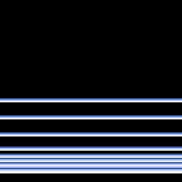

Déplacement d'un rectangle avec rebond
Explications
Déplacement
- La position du rectangle est défini par deux variables x et y.
- Avant d'afficher une nouvelle image, on modifie la valeur de x et y dans la fonction
update. x=x+vxaugmente la position horizontale d'une quantité valantvx.vxest la vitesse horizontale.
Rebond
- Si la position horizontale déplace les limites inférieures (x<0) ou supérieures de l'écran (x>128) alors on inverse la vitesse.
Par exemple: si l'objet se déplace à droite (vx=1) et qu'il sort de l'écran (x>128) alors vx= -vx c'est à dire vx=-1. Ainsi les prochaines valeurs de x seront décrémentées (x=x+vx c'est à dire x=x-1). L'objet se déplacera vers la gauche.
Travail
- Repère la ligne qui dessine le rectangle. Quelles sont ses dimensions ?
- Identifie dans le programme ci-dessous les lignes qui permettent le déplacement du rectangle.
- A partir des deux fonctions complétées, écris un programme qui anime un rectangle qui se déplace à l'écran en rebondissant sur les bords.
def update():
global x,y,vx,vy
if x>...à compléter or x<...à compléter... :
vx = -vx
if y ... à compléter .... :
vy = -vy
# Calcul de la nouvelle position
x = x+ vx
y = y+ ...à compléter...
def draw():
pyxel.cls(7)
pyxel.rect(x,y,largeur,hauteur,2)
Correction à ne regarder qu'après avoir vraiment chercher
#!/usr/bin/env python3
import pyxel
pyxel.init(128,128,title="Rectangle")
def update():
global x,y,vx,vy
if x>128 or x<0:
vx = -vx
if y>128 or y<0:
vy = -vy
# Calcul de la nouvelle position
x = x+ vx
y = y+ vy
def draw():
pyxel.cls(7)
pyxel.rect(x,y,largeur,hauteur,2)
#Programme Principal
# Initialisation des variables
x = 60
y= 30
largeur = 12
hauteur = 8
vx = 1
vy = 1
pyxel.run(update, draw) #Appel en boucle les fonctions update et draw
Défi ultime !
En utilisant les défis précédents, réalisez l'animation suivante:
Facultatif: on bidouille avec frame.count
- Etudier la fonction
draw()suivante. La fonctionupdate()peut rester vide. - Réfléchissez à l'instruction
frame.count
from math import sin
def draw():
# vide la fenetre
pyxel.cls(0)
for i in range(10):
lsin = sin(pyxel.frame_count / 20 +i /4)*50
for l in range(1,4):
pyxel.line(0,68+l + lsin,128,68+l+lsin,l+4)
pyxel.text(128-pyxel.frame_count,0, "Animation de lignes. Prise en main de Pyxel en NSI .... ".upper(),6)
